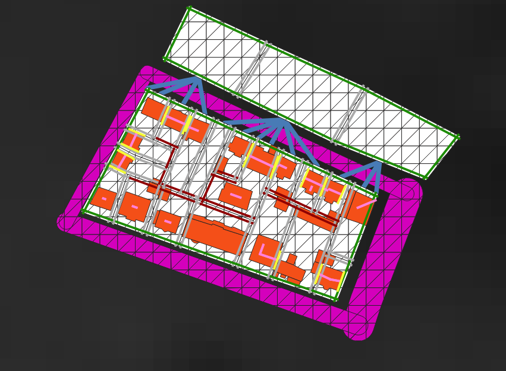
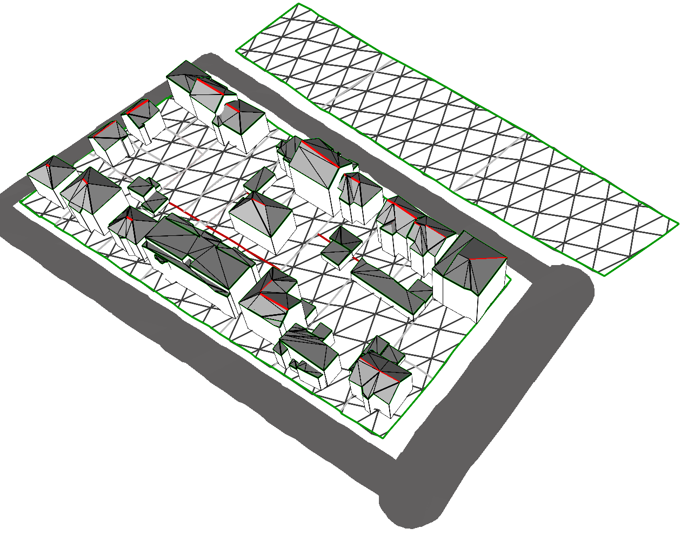

Vérifier l'intégration des données
L'objectif de cette page est de proposer deux méthodes pour vérifier la bonne intégration des données à partir d'un jeu de données complet. Il est possible soit : - d'exporter les instances du modèle sous forme de ShapeFiles ; - de visualisation en 3D les informations du modèle.
Ces codes sont disponibles dans le projet du tutoriel dans le package fr.ign.simplu3d.testIntegration.
Attention: : pour ces codes, la visualisation 3D et le chargement de MNT nécessitent l'utilisation de bibliothèques natives Java 3D (qui se trouvent dans le projet SimPLU3d-tutorial). Il est nécessaire de passer à la VM l'argument suivant :
-Djava.library.path=./lib/native_libraries/linux-amd64
La ligne précédente est définie pour Linux 64 bits, au besoin, il faut remplacer linux-amd64 par windows-i586 (windows 32bits), windows-amd64 (windows 64bits) ou linux-i386 (linux 32bits) en fonction de l'OS utilisé.
Jeu de données
Un jeu de données complet suivant les spécifications du processus d'intégration est disponible dans le dossier resources/completeDataSet. On peut voir ci-dessous une carte de ces données :

On peut noter dans ce jeu de données la présence d'un MNT et de bâtiments 3D avec un toit typifié (ce qui explique les polygones internes aux polygones de bâtiments).
Export des informations du modèle sous forme de Shapefile
La classe ExportAsShape permet d'exporter l'instance de la classe Environnement sous forme de Shapefiles. Le code nécessite de déterminer un dossier de sortie pour pouvoir être appliqué (et il utilise le dossier de ressource qui se trouve dans le projet).
L'exécution du code génère une série de ShapeFiles représentés dans la carte suivante.

Les géométries en sortie sont triangulées car plaquées sur le MNT (s'il est utilisé). On retrouve les fichiers suivantes :
| Nom du fichier | Contenu | Attributs intéressants |
|---|---|---|
| bpu.shp | Unités foncières | |
| parcelles.shp | Parcelles | ID : Code BounNum : Nombre de limites séparatives BuildNum : Nombre de bâtiments |
| subParcels.shp | Sous-parcelles | NB Bat : Nombre de parties de bâtiments |
| bordures.shp | Limites séparatives des parcelles | Type : type de la limite IDPAR : identifiant de la parcelle Adj : Identifiant de la parcelle adjacente SIDE : côté de la limite (droite ou gauche) |
| bordures_translated.shp | Limites séparatives translatée | Type : type de la limite SIDE : côté de la limite (droite ou gauche) |
| opposites.shp | Lien entre une limite et la limite opposée | |
| footprints.shp | Emprise des bâtiments 3D | |
| faitage.shp | Faîtage des bâtiments | |
| pignon.shp | Pignons des bâtiments | |
| roads.shp | Surface des routes | Nom : nom des routes |
Les limites séparatives du fichier bordures_translate.shp sont translatées vers l'intérieur des parcelles auxquelles ils appartiennent pour des raison de lisibilité (afin d'éviter les superposition entre limites appartenant à des parcelles adjacentes). Pour les valeurs des énumération SIDE et Type des limites séparatives, vous pouvez vous référer aux énumérations ParcelBoundaryType et ParcelBoundarySide.
Visualisation 3D des informations du modèle
La classe Integration3DViewer permet une visualisation 3D d'un environnement. Il est possible de déterminer via une liste de thèmes, les informations à afficher dans la vue 3D. La liste des thèmes disponibles est consultable via l'énumération RepEnvironnement.Theme. Pour chaque thème, un rendu est prédéfini afin de visualiser les informations correspondantes.
Le visualisateur 3D utilisé est celui de GeOxygene3D vous trouverez plus de documentation sur comment représenter des données et sur comment naviguer sur le site de GeOxygene.
